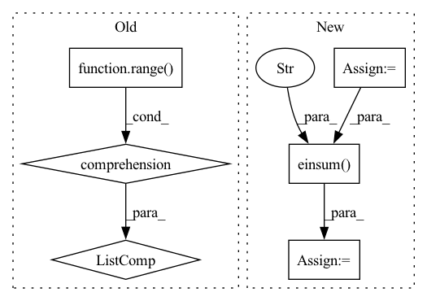

Pattern ID :40924

Before Change
P = 10
points = np.concatenate(
[X.projection(_G.sample()) for _ in range(P)],
axis=1
)
After Change
output = torch.einsum("oifp,bip->bof", filters, features)
for _ in range(20):
g = G.sample()
output1 = torch.einsum("oi,bif->bof",
torch.tensor(out_rep(g), dtype=output.dtype),
output)
transformed_points = torch.tensor(
X.action(inclusion(g)),
dtype=points.dtype) @ points
transformed_filters = basis.sample(transformed_points)
transformed_features = torch.einsum("oi,bip->bop",
torch.tensor(in_rep(g), dtype=features.dtype),
features)
output2 = torch.einsum("oifp,bip->bof", transformed_filters, transformed_features)
if not torch.allclose(output1, output2, atol=1e-5, rtol=1e-4):
print(f"{in_rep.name}, {out_rep.name}: Error at {g}")
print(a)
In pattern: SUPERPATTERN
Frequency: 3
Non-data size: 6
Instances
Fragment ID: 115358325
Project Name: quva-lab/escnn
Commit Name: 98a89c5f80da2d489df613d8c73d943c69fb7f51
Time: 2022-08-28
Author: gabriele.cesa@gmail.com
File Name: test/kernelspaces/test_restrictedwignereckart.py
M Class Name: TestWEbasis
N Class Name: TestWEbasis
M Method Name: _check_irreps(6)
N Method Name: _check_irreps(6)
M Parent Class: TestCase
N Parent Class: TestCase
M File Name: test/kernelspaces/test_restrictedwignereckart.py
N File Name: test/kernelspaces/test_restrictedwignereckart.py
M Start Line: 224
M End Line: 274
N Start Line: 309
N End Line: 353
'>
Before Change
P = 10
points = np.concatenate(
[X.projection(G.sample()) for _ in range(P)],
axis=1
)
After Change
// for g in G.testing_elements():
for _ in range(50):
g = G.sample()
output1 = torch.einsum("oi,bif->bof",
torch.tensor(out_rep(g), dtype=output.dtype, device=output.device),
output)
transformed_points = torch.tensor(X.action(g), device=points.device, dtype=points.dtype) @ points
transformed_filters = basis.sample(transformed_points)
transformed_features = torch.einsum("oi,bip->bop",
torch.tensor(in_rep(g), device=features.device, dtype=features.dtype),
features)
output2 = torch.einsum("oifp,bip->bof", transformed_filters, transformed_features)
if not torch.allclose(output1, output2, atol=1e-5, rtol=1e-4):
print(f"{in_rep.name}, {out_rep.name}: Error at {g}")
print(a)
'>
Fragment ID: 115358328
Project Name: quva-lab/escnn
Commit Name: 98a89c5f80da2d489df613d8c73d943c69fb7f51
Time: 2022-08-28
Author: gabriele.cesa@gmail.com
File Name: test/kernelspaces/test_wignereckart.py
M Class Name: TestWEbasis
N Class Name: TestWEbasis
M Method Name: _check_irreps(4)
N Method Name: _check_irreps(4)
M Parent Class: TestCase
N Parent Class: TestCase
M File Name: test/kernelspaces/test_wignereckart.py
N File Name: test/kernelspaces/test_wignereckart.py
M Start Line: 77
M End Line: 119
N Start Line: 67
N End Line: 112
'>
Before Change
weight_shape = [ctx.dims.spatial_mixing_kernel] * 2
max_dims = math.floor(math.log(ctx.dims.sequence, ctx.dims.spatial_mixing_kernel))
mask = jnp.triu(jnp.ones(weight_shape, dtype=ctx.model.computation_dtype)) if ctx.model.autoregressive else 1
weights = [get_param(ctx, f"mix_{i}", weight_shape, std=1, scale=ctx.dims.spatial_mixing_kernel ** -0.5)
for i in range(max_dims)]
if ctx.is_initializing:
return inp
After Change
mask = jnp.logical_not(jnp.tri(ctx.dims.spatial_mixing_kernel, k=-1)) if ctx.model.autoregressive else 1
out = inp.reshape(ctx.dims.batch * batch, ctx.dims.spatial_mixing_kernel, -1, ctx.dims.features)
out = jnp.einsum("bkrf,kg,kg->bgrf", out, wgt0, mask)
out = activate(ctx, out)
out = jnp.einsum("bkrf,kg,kg->bgrf", out, wgt1, mask)
return out.reshape(original_shape)
'>
Fragment ID: 115358331
Project Name: homebrewnlp/homebrewnlp-jax
Commit Name: acfb8d5fbb1ba8f6b7830832f913663e426b9d09
Time: 2022-09-01
Author: 39779310+ClashLuke@users.noreply.github.com
File Name: src/model/mixer.py
M Class Name: AnonimousClass
N Class Name: AnonimousClass
M Method Name: mix(3)
N Method Name: mix(2)
M Parent Class:
N Parent Class:
M File Name: src/model/mixer.py
N File Name: src/model/mixer.py
M Start Line: 14
M End Line: 32
N Start Line: 13
N End Line: 29